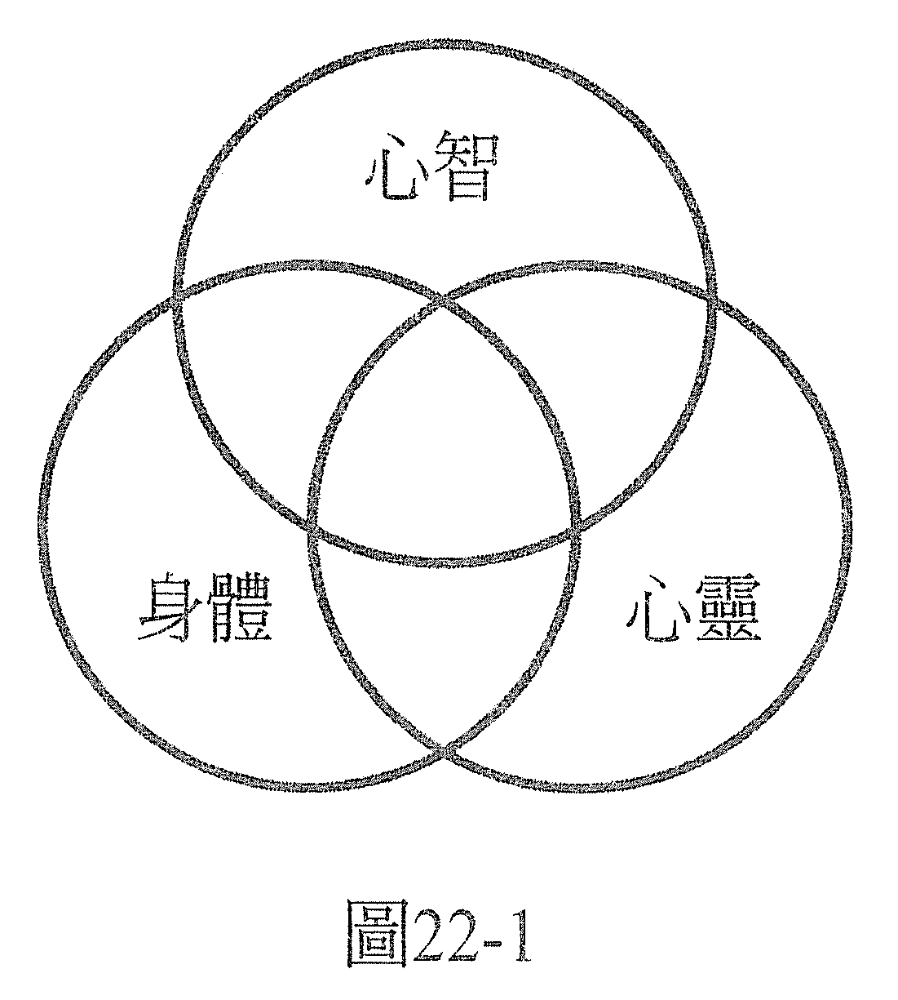

第 22 章 风与浪——创造与共同创造
一切皆始于意识，你的意识。因此，就身为个体的你来看，一切发生在你人生里的事、以及一切发生在你身体里的事，都始于某件发生在你意识里的事。若你回顾你人生中发生过的事，你会发现这些事件反映了你曾做过的深刻决定。
为了实践这些决定，才显化出这样的实相。宛如你走过一场梦，这场梦回应了你内心深处的欲求和选择。在你的梦里，唯一参与的就只有你的意识，你周遭的一切都只不过是这个意识的投射。梦里的其他角色也全是你的意识投射，根据你的决定或你相信的真实来上演他的部分。
意识创造出梦境，投影机创造出电影，而你就是创造者，你同意同时分饰导演、演员、观众三者。你所决定的一切都会由你来演出，你甚至可以评论你这出电影，决定它演得有多好，它是这样演就很好了呢，还是要改写一下会更好。从这个角度来看的话，就像从你的紫色脉轮（顶轮）来看，这纯粹的意识正体验着「我在」，做梦者梦着这场梦——唯一存在的就只有你。
从另外的观点来看，一如你是意识，把梦境投射在身边，成为你的泡泡、你的经验范围一样，你电影里的其他角色也是如此，他们每一个人都是一个意识，活在美妙精致、运作完善、灵活的有机机器里，把自己的泡泡投射在周围，与投射着相同泡泡的其他人互动。
这些泡泡互相渗透，它们在交会处、在剧本重叠处，在这个场景里，创造出我们一般称为外在物质实相的「三维全息图」。然后，发生在这个外在实相里的事件，就是每一个参与其中的意识做的决定所带来的结果。我们需要承认不只自己是创造者，其他的每一个意识也都是创造者。靛蓝脉轮把每个存有都看作是共同创造者。
若要让灵性提升，就必须承认自己和别人都是创造者。这样，你就有办法去探索自身意识的某些部分，不承认这点的话，你是无法连结它们的。例如，如果除了你以外，没有其他存有，你该如何探索「沟通」这件事呢？
当你探讨共同创造，你就可以超越自身主观的观点，受惠于更宽广的视野所带来的洞见；这个宽广的视野来自群体意识，它在意的是所有成员的福祉，这个有机体的观点会保护在它里面的每一部分。
当你观察物质实相里的事件——你身边经常发生或不常发生的事，并把这些能量拟人化，也就是赋予它一个角色，仿佛你在和另一个意识互动一样，那么你就会学到很多。这个别的意识可以是一个人，也可以是你的心灵，或是群体意识，例如一国或一城的心灵，你可以用这样的方式检视。
然后，你可以问自己这个互动有什么特色。这个群体意识喜欢、支持你的互动吗？还是它传达的是别的讯息？
这个靛蓝脉轮的观点有什么特色呢？若完全把你的意识看成一个能力无远弗届的创造者，那么当你做出决定或设定目标时，这个目标的完成就已经存在了。你已经用意念创造出它了，当你在意识里放入完成的画面，你就已经开始走向完成。
也可以说，梦里的事件、你身边的电影，似乎都在回应你的意念，好让这些外在的事件把你带向目标的完成，而这是由你意识的决定所启动的；共同创造的实相犹如大海，而它就好比海上的风与浪。你决定一件事，它就发生。
决定了 A→A 就显现了
那么，当两个创造者（每个创造者都有无远弗届的能力）做出了不同的决定时，会怎么样？当然，实相会倾向于让两个创造者的意念都得到实现。
这两种不同的意念可能是互补，也可能是对立。若为互补，那么每一个创造者都在增强与强化对方，他们各自做出的决定发生的机率会更大。风与浪会更强。
比方说，在做疗愈的时候，当意念一致、希望显现的结果是症状纾解了，就会比起只有一个意识及其有限的观点决定要好转的速度快得多。
当意念不一致，就不一样了。这种不一致或许是有意识的决定，也或许是由感觉或情绪反弹所造成。记住，我们人人都是纯粹的意识，但也可以说都是由心智、身体、心灵组合而成的（见图 22-1）：

● 身体代表物质的因果实相，我们对所发生的事物持有的信念程度，是基于化学、生物、物理学等的法则。
● 心智代表基本信念、观念，可能会用来限制自己但也可能用来克服物质实相加诸于我们的限制。
● 心灵可以不只代表心灵、灵性的实相，还有情绪以及对事情的情绪反应。
如前所述，实相会按照你的目标显化，会按照你放入意识里的图像显化。它也可能按照你的恐惧来显化。若你老是在意识中抱着你恐惧的画面不放，就会提高它发生的机率，因为你在给这个画面能量，你在给它注意力，恐惧把你和这个画面黏在一起了。
当你领悟到这个黏胶、这份恐惧，正在吸引你所恐惧的事物、让它更容易成真，你就有能力去释放它，去想着一个截然不同的事件或对你感觉较好的结果的画面。
例如，与其想着你爱的人会离开的画面，不如坚信他会留下来、和你幸福快乐地生活，然后把它当成已经成真的事实来给它能量；如果它成真的方式也能满足你的爱人的需求，他应该会认同你的画面。
既然是两个平等的人在共同创造，就务必记得：这是需要两个人，不只需要一个人的。共同创造就是透过共识而产生的实相，是双方都首肯的情况下产生的形态。
就疗愈而言，若把疗愈看作是两个创造者共同显现的成果，假如案主害怕放下旧有的观念，那么光是这种执着就可能会削弱身为能量治疗师的你在发挥的效用，痊愈的机率就会小些。可以说这是在抗拒痊愈。当然，假如你对于自己能做到什么样的程度有一些画地自限的念头，结果也是一样的，都是在抗拒痊愈。
这种抗拒的情况可能会显现为症状没有获得纾解，或是纾解得很慢，或是没有痊愈。换言之，能量治疗师可能不会完成工作，或者外在的事件会去助长无法痊愈的机率。
例如，疗愈时出现大声的噪音，可能导致两个人分心，结果中断了疗愈，这可以视为至少其中一个人的意识在抗拒的例子。它在物质宇宙里显现成让疗愈有机会无法成真。
另一种抗拒的形式可能是你觉得头昏脑胀，无法继续做疗愈。在疗愈的过程中，当你让自己的意念与案主的意念一致，除了看到案主痊愈之外，别无其他个人的目标，那么在疗愈的过程中，所有发生在物质宇宙里的一切，都是从案主的意识中显现而出的。在这个过程中，案主是宇宙的中心，是他的意识创造出这场电影。因此可以说，是案主的意识创造出这些巨大的噪音，甚至还让能量治疗师头晕目眩、令他分心。
你移除案主意识中的抗拒以后，显现在物质宇宙里的事物也会随之找到了平衡，做出改变，变得能支持疗愈的过程。巨大的噪音停止。你不再感到头晕目眩。一切好像又重新流动起来。
当然，我们也可以说，所有发生在疗愈过程中的事情，都是能量治疗师的意识所导致的结果，最后是能量治疗师要为一切负责，这个观点是可以成立的。然而，这还是没有解释为什么当一个能量治疗师接连做两次类似症状的疗愈，其中一个会让他感觉比较轻松。若说能量治疗师为每次的疗愈都提供了相同的元素，那就只能推定结果之所以不同，是因为受了案主的意识所影响。
如果疗愈的过程中出现抗拒，那么参与疗愈的两方都要决心去肯定自己渴望完成疗愈，移除抗拒。案主要选择更敞开心胸，身为能量治疗师的你则要重新肯定你的意念，也就是想要看到痊愈，并终止画地自限的想法，必要时重新引导注意力，完成你想进行的行动，也就是疗愈。
共同创造的原则也可以应用在其他历程上，疗愈只是其中一个例子。若你在人生中做的决定，最后的结局往往和你原先设想的不一样，这该怎么解释？有时比你想象的好，有时不尽如意。比你想象的好的时候，可能显然有其他的意识参与了，一个仁慈的意识在帮助你。你可以认为这个其他的意识是上帝、或是你的心灵、或是天命。
你也可以问问自己，除了你以外，还有谁会乐见这样的结果？并深信是他们的意识所牵动的风与浪增强了你的意识。每个人都是赢家。朋友稍微推了你一把，于是你过关了。
可是，当决定了 A、结果显现的却是 B，不如你预期的时候，又是怎么回事呢？这是上帝造成的，还是你的心灵？显然，这些灵体都是为了你才做这些事的。心灵导演的每一件事都是为了你，不管你当时是否有留意到它的好。你可以选择要发现它的好，为这些事件找出道理，或是坚信等你以后知道这件事的所有影响后，就会发现道理了。
如果显现出来的样貌对你而言不够理想，那你可以先看进自己的内心，是否有任何画地自限的信念或阻碍你的观念，能解释这些事件之所以发生的原因。你是否绑住自己了？毕竟天助自助者。而画地自限的想法总是可以改变的，变得支持成功，然后你就可以预期未来会有不同的样貌显现。
如果我们选择认为宇宙是透过群体意识、共同创造所显现而成，那么去留意，是谁乐见这些事情的发生？无论是他们有意识的意念还是情绪反应，都会很有意思。
可以说，发生在对方意识里的事情，创造出干预你意识的风与浪，创造出更复杂的向量和力道，可能让事情走向了别的方向，和你的意图不同。毕竟，对方也是一个创造者。
要活出你自己的力量，就得先看到：是你允许了自己受到他人的意识影响；他的兴趣与你不同，他想要的和你衷心想要的不一样。那么，你可以选择是要让自己在这些力量的面前变得毫无招架之力，还是要脱离对方的意识，或是要与对方的意识协调，化解这些明显不同的意念，找出对双方都好的解决之道。否则，这只会是一场权力的考验，测试谁可以保持坚定，谁能在对方心中创造怀疑，削弱对方。能坚定的就能使意念成真。
商讨可以让你们设定出新的目标，更能达成两方意识都想要的目标，好让大家的意念一致，促成双赢的局面；像在做疗愈的时候，有个双方都能认同的目标。
这很像当个乘风破浪的冲浪手，不管它们朝什么方向移动，都还是会把你带向你选择的目的地。乘风破浪、冲浪都需要你完全活在当下这一刻的体验里，有意识且警觉地，不只觉察你内心的情况，也觉察你身边的实相如何显现。这就是蓝色脉轮的认知，你会留意到你与觉另外一种层次的智慧首次有了互动。
当这一刻的环境似乎非常鼓励你做出行动，仿佛整出电影都暂停了，下一个你做的决定将会影响接下来所有的事件如何演变。仿佛你带着冲浪板走进海洋，浪来了，你遇到一个最佳的行动时机、一个切入点，此刻，你必须决定是要乘浪而去，还是再等待下一个浪头。
这一刻不会永存。若你决定等待，或是你决定不做决定，那浪会继续朝它的方向而去，你就必须等待下一个最佳的时刻——如果还有的话。有时候这次的浪是万里挑一、是一生一次的难得机遇。也或者，你若有信心和耐心，你还会再遇到一次浪，甚至是更好的一次，另一个切入点，或许当它出现的时候，还会有另一次行动的绝佳片刻与时机。
浪来的时候，你可能会按照你预订的目标还有你做出的决定，以及它会如何达成，来看它有机会朝什么方向前进，而对浪的大小产生概念。冲浪的好坏取决于你是否能一直活在当下，你有没有能力在经历到的那一刻立即回应各种情况，你能不能选择和有机会朝那个方向发生的事情一起行动。
能量治疗师和案主都在创造风与浪；为了疗愈而齐聚一堂的这一刻，是在创造一个机会，是决定要乘这个浪。也许为时很短，只有几分钟，但令人兴奋，而且效果深远，会永远地朝正面的方向改变某人的一生，甚或是两人的一生。
这是正面的一冲！去吧！
——在这个世界上，一切都可以疗愈！——